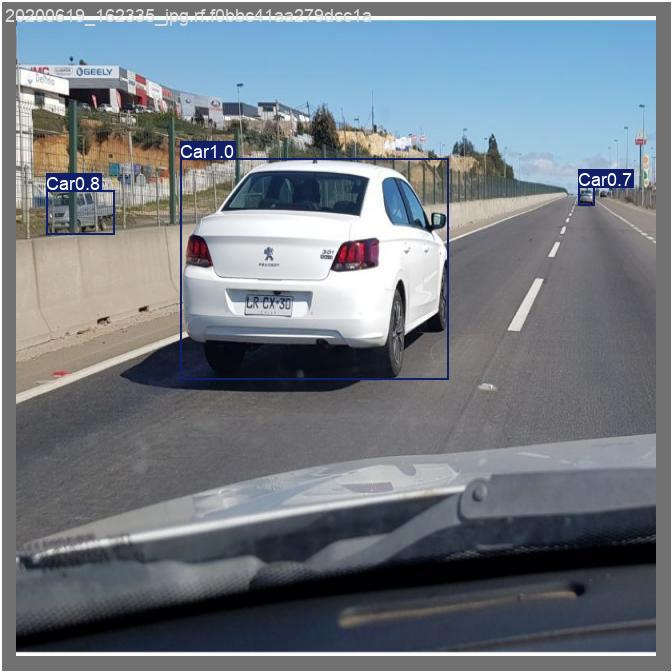
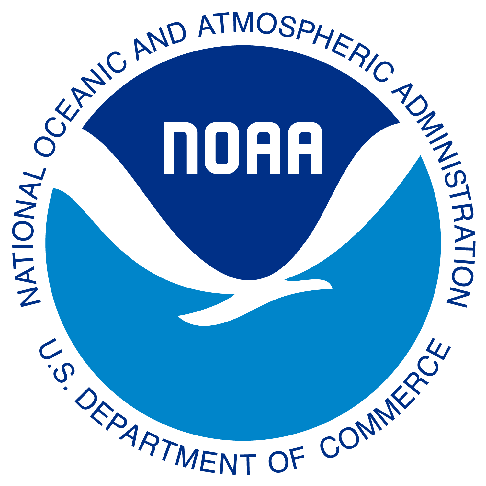
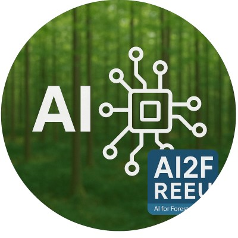

Computer Vision · Autonomous Systems
EcoCAR Road-Object Detection
Compared YOLO models and froze a detector using held-out validation for real-time road scenes.
Niraj Gupta
Always learning, experimenting, and working on something new.
TL;DR

Building CatBoost models for marine data.
Built sequence models for 5G jamming detection.
Worked on parallel algorithms and cluster computing.

Built vision models for Raspberry Pi deployment.

Computer Vision · Autonomous Systems
Compared YOLO models and froze a detector using held-out validation for real-time road scenes.
Machine Learning · Optical Transfer
Compressed images into VQ-VAE latents and moved them between phones through validated QR-code frames.
AI Systems · Product
Built an explainable job-matching assistant with embedding search, preference filters, confidence estimates, and audit logs.